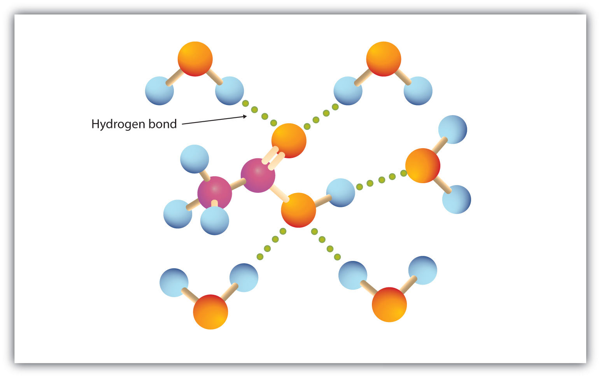

Many carboxylic acids are colorless liquids with disagreeable odors. The carboxylic acids with 5 to 10 carbon atoms all have “goaty” odors (explaining the odor of Limburger cheese). These acids are also produced by the action of skin bacteria on human sebum (skin oils), which accounts for the odor of poorly ventilated locker rooms. The acids with more than 10 carbon atoms are waxlike solids, and their odor diminishes with increasing molar mass and resultant decreasing volatility.
Carboxylic acids exhibit strong hydrogen bonding between molecules. They therefore have high boiling points compared to other substances of comparable molar mass.
The carboxyl group readily engages in hydrogen bonding with water molecules (Figure 15.3 "Hydrogen Bonding between an Acetic Acid Molecule and Water Molecules"). The acids with one to four carbon atoms are completely miscible with water. Solubility decreases as the carbon chain length increases because dipole forces become less important and dispersion forces become more predominant. Hexanoic acid [CH3(CH2)4COOH] is barely soluble in water (about 1.0 g/100 g of water). Palmitic acid [CH3(CH2)14COOH], with its large nonpolar hydrocarbon component, is essentially insoluble in water. The carboxylic acids generally are soluble in such organic solvents as ethanol, toluene, and diethyl ether.
Figure 15.3 Hydrogen Bonding between an Acetic Acid Molecule and Water Molecules
Carboxylic acids of low molar mass are quite soluble in water.
Table 15.2 "Physical Constants of Carboxylic Acids" lists some physical properties for selected carboxylic acids. The first six are homologs. Notice that the boiling points increase with increasing molar mass, but the melting points show no regular pattern.
Table 15.2 Physical Constants of Carboxylic Acids
| Condensed Structural Formula | Name of Acid | Melting Point (°C) | Boiling Point (°C) | Solubility (g/100 g of Water) |
|---|---|---|---|---|
| HCOOH | formic acid | 8 | 100 | miscible |
| CH3COOH | acetic acid | 17 | 118 | miscible |
| CH3CH2COOH | propionic acid | –22 | 141 | miscible |
| CH3(CH2)2COOH | butyric acid | –5 | 163 | miscible |
| CH3(CH2)3COOH | valeric acid | –35 | 187 | 5 |
| CH3(CH2)4COOH | caproic acid | –3 | 205 | 1.1 |
| C6H5COOH | benzoic acid | 122 | 249 | 0.29 |
Which compound has the higher boiling point—butanoic acid (molar mass 88) or 2-pentanone (molar mass 86)? Explain.
Would you expect butyric acid (butanoic acid) to be more or less soluble than 1-butanol in water? Explain.
butyric acid because of hydrogen bonding (There is no intermolecular hydrogen bonding in 2-pentanone.)
more soluble because there is more extensive hydrogen bonding
Which compound has the higher boiling point—CH3CH2CH2OCH2CH3 or CH3CH2CH2COOH? Explain.
Which compound has the higher boiling point—CH3CH2CH2CH2CH2OH or CH3CH2CH2COOH? Explain.
Which compound is more soluble in water—CH3COOH or CH3CH2CH2CH3? Explain.
Which compound is more soluble in water—CH3CH2COOH or CH3CH2CH2CH2CH2COOH? Explain.
CH3CH2CH2COOH because of hydrogen bonding (There is no intermolecular hydrogen bonding with CH3CH2CH2OCH2CH3.)
CH3COOH because it engages in hydrogen bonding with water (There is no intermolecular hydrogen bonding with CH3CH2CH2CH3.)